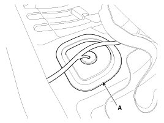
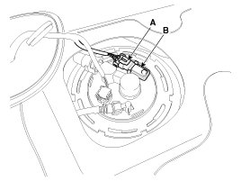

Fuel Tank Pressure Sensor: Service and Repair
Inspection
1. Connect the GDS on the Data Link Connector (DLC).
2. Measure the output voltage of the FTPS.
Specification:Refer to "Specification"
Removal
1. Turn the ignition switch OFF and disconnect the battery negative (-) cable.
2. Remove the rear seat .
3. Remove the fuel pump service cover (A).

4. Disconnect the fuel tank pressure sensor connector (A).
5. Remove the fuel tank pressure sensor (B) after releasing the hooks vertically.

Installation
CAUTION:
- Install the component with the specified torques.
- Note that internal damage may occur when the component is dropped. In this case, use it after inspecting.
CAUTION:
- Insert the sensor in the installation hole and be careful not to damage when installation.
1. Installation is reverse of removal.